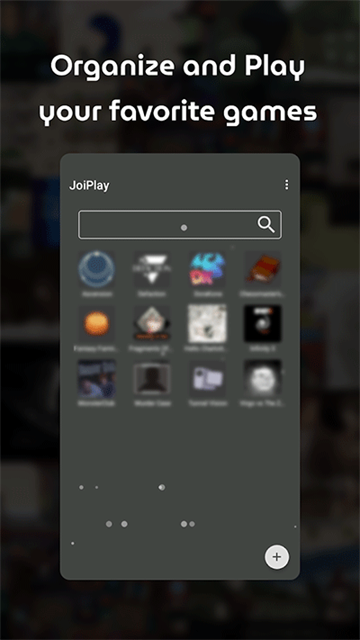
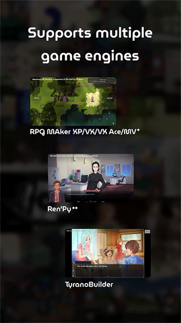

JoiPlay 上手三天：手机玩独立 PC 游戏这件事终于靠谱了
通勤路上想补完电脑上没通关的视觉小说？RPG Maker 同人圈刷到个好作品但只有 PC 版？我装了 JoiPlay 试用了一周，聊聊真实体验。
上周在 itch.io 上翻到一个 Ren'Py 视觉小说，评价很高但只有 Windows 版本。我已经是第三次因为"只有 PC 版"错过这种作品了——白天上班摸鱼刷手机惯了，晚上坐在电脑前反而没耐心点开。Google Play 上搜了一圈，最后装了 JoiPlay。
说实话，第一次打开的时候我没抱太大期望。之前试过好几款号称能在手机上跑 PC 游戏的工具，要么兼容性差到离谱，要么性能折损严重，要么界面土得像十年前的 Java 软件。JoiPlay 的官网上有个三件套的说法——核心 APK + RPG Maker 插件 + Ren'Py 插件——让我一开始以为就是个套壳的模拟器合集，没太当回事。
安装：比想象中折腾，但有道理
从下载安装的过程说不上流畅，但也不算困难。核心 APK 先装，然后按需装插件。Ren'Py 那里我纠结了一下——Ren'Py 8.5 和 7.7.1 两个插件都装了，因为不确定目标游戏用的是哪个版本，干脆全装省得后面来回试。RPG Maker 插件也装上了，毕竟同人圈里 RPG Maker 作品更多。
装完打开，界面意外地干净。左侧是侧栏分类，右侧是游戏卡片网格，每款游戏有封面图、引擎标签和最近游玩时间。核心功能一目了然，没有花里胡哨的广告位，也没有"推荐你装 XX 插件"的弹窗骚扰。

导入游戏也很简单——把 PC 上解压好的游戏文件夹拷到手机，JoiPlay 自动扫描识别。我拷了三款 RPG Maker VX Ace 游戏和一款 Ren'Py 视觉小说，全部秒识别，没有一款需要手动指定引擎类型。这个自动识别能力挺惊喜的，之前用其他工具要么让我手动选引擎，要么识别错了直接打不开。
用起来：两个细节决定体验上限
真正让我觉得"这东西能用"的，是两个小细节。
第一个是 RPG Maker 游戏的兼容性。我测的那款宝可梦改版 RPG Maker VX Ace 作品，之前用 Wine on Android 跑过，文字有乱码、音效断断续续、还有几个动画直接渲染不出来。换 JoiPlay 打开，全屏流畅、中文正常、音效完整——甚至连那个需要 RTP 运行库的提示都只是弹了个对话框问我要不要自动下载，点了一下就搞定了。之前在 Wine 上折腾 RTP 搞了快半小时，解压、指路径、重启游戏，还差点把手机存储搞满。
说实话这个自动下载 RTP 的功能我后来才发现是个小事，但当时那种"点一下就好"的感觉真的挺爽的。

第二个是 Ren'Py 的存档回滚。Ren'Py 视觉小说的玩家都懂，回滚（rollback）是个刚需——选错选项了想回去重新选、漏看了一段对话想翻回去再看。JoiPlay 的 Ren'Py 插件把这个功能完整搬过来了，而且触屏操作很顺手：在屏幕上从左往右快速划一下就是回滚，往回划就是前进，划的距离决定回滚的快慢。刚开始不太熟练，偶尔会回滚过头，但玩上十几分钟就习惯了。虚拟手柄的布局也可以自定义，我把方向键调大了一圈，触控体验好了很多。
说个别扭的地方：游戏存档位置在手机内部存储的 JoiPlay 目录下，文件结构和 PC 版 Ren'Py 的存档目录不完全一致。我本来想把电脑上的存档拷过来接着玩，结果找了半天才发现 JoiPlay 对 Ren'Py 存档做了一层封装。这个问题翻了一下joiplay文档才搞明白，但文档里的说明也不算很直观。
适合谁，不适合谁
用了一周，我对 JoiPlay 的定位越来越清晰。
如果你是 RPG Maker 同人圈的玩家——喜欢宝可梦改版、日系独立 RPG、各种 2D 复古冒险——那 JoiPlay 基本上是手机上的唯一靠谱选择。这些作品大多体量不大、剧情为主，通勤路上碎片时间玩正合适。JoiPlay 在 RPG Maker 引擎内的兼容度确实高，我测的几款全部能正常运行，没有遇到过需要特殊配置的情况。
如果你是 Ren'Py 视觉小说爱好者，尤其是那种已经在 PC 上买了不少、想在手机上补完的玩家，JoiPlay 的 Ren'Py 插件应该能覆盖绝大多数情况——除了少数用了特别新的或特别旧的 Ren'Py 版本的作品。
如果你还想玩 Flash 怀旧游戏，Ruffle 插件也支持，把 SWF 文件拷进去就能玩。我试了一个摩尔庄园的早期版本，能正常打开，虽然操作在触屏上不如鼠标顺手，但至少童年回忆没丢。
但有些场景 JoiPlay 真不是干这个的。想玩塞尔达、马里奥这些主机大作？那是 RetroArch 或 Dolphin 的活。想在手机上玩 Windows 原生 EXE？还是老老实实装 Wine 或者开远程桌面吧。想玩手机原生游戏？那去应用商店下载就行。联机游戏更别想——JoiPlay 不走网络栈，多人游戏基本没戏。
总结
用了一周，JoiPlay 解决了我一个真实的痛点：通勤路上想玩点东西，但手机原生游戏要么太肝要么太碎片，PC 上的独立作品又没法带到路上。之前试过好几个类似工具，最后都因为兼容性或性能问题放弃了，JoiPlay 是第一个让我觉得"这东西真的能用"的。
它不是完美的——Ren'Py 存档的封装设计对想跨平台同步进度的玩家不太友好，插件体积也不小（装齐 RPG Maker 和 Ren'Py 8.5/7.7.1 这几个插件就快 200MB 了），Google Play 版本可能已经不维护了。但对于它的目标用户来说，这些都是可以接受的小问题。
这款工具的完整资料在 GitHub、Gitee、GitCode 三个平台都有镜像，国内用户选 Gitee 或 GitCode 访问更快。如果你也有类似的需求，不妨装一个试试。毕竟能在手机上玩到那些只有 PC 版的好作品，这点折腾是值得的。